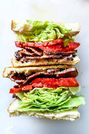

B is for Bacon
L is for Lettuce
T is for Tomato
Question: Should a BLT ever have ketchup on it?
Answer: HELL NO

This is a BLT: bacon, lettuce and tomato. Order doesn't necessarily matter. It tastes like someone put childhood nostalgia between two slices of bread.
Description:
The BLT has European roots originating in 1920's Britain.
The BLT was popularized in America during WW2 due to the ease with which women at home could
buy, cook and assemble the ingredients.
The BLT holds a special place in my heart becaue I used to go to a local deli with my dad to buy BLT's with
freshly toasted bread and cooked bacon. We would also buy apply juice in a jar shaped like an apple and drink it with our sandwhiches in the car
I reccommend this delightful dish to anyone seeking instant (or near instant) gratification and satisfaction.
Ingredients:
- Bread
- Mayo
- Tomato
- Lettuce
- Bacon
- Avocado (optional)
Steps
- Gather the ingredients listed above
- Make sure you have a toaster
- Toast bread/li>
- Fry bacon in a pan and place onto paper towel to absorb teh excess oil
- Slice tomato and lettuce
- Apply mayo to the toast after it is golden brown
- place bacon, lettuce, tomato and optionally sliced avocado in between the bread slices
- Slice DIAGONALLY and serve with toothpick stabbed in the center
Back